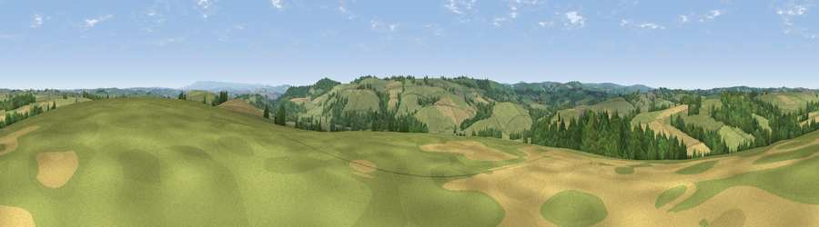

Viewpoint near Yeolmbridge
#20517 in England · top 40% of its area beats it · near Yeolmbridge · access?Where it is
The exact computed spot (SX 30275 88425). Click the marker for map links.
Public access: no public right of way or access land is recorded at this exact spot — it may be on private land. Computed from Natural England's CRoW access layer and OpenStreetMap rights of way — not the legal definitive map. Always verify locally.
The view, rendered

A 360° render of this exact spot computed from the terrain model, tree cover and land cover — summer colours, afternoon light, calibrated against photographs of famous viewpoints. Real trees, hedges and buildings will differ in detail.
The panorama
Grey silhouette: terrain skyline in each direction (720 bearings, Earth curvature and refraction included). Dashed green: skyline with trees (+15 m) and buildings (+8 m) as obstacles. Blue strip: how far the ground is visible on each bearing.
Where the view opens
Wedge length = distance to the farthest visible ground on that bearing (vegetation-aware). Rings at 10, 25 and 50 km.
What fills the view
62% grassland · 19% cropland · 19% woodland ·
Angular shares of the visible panorama (visual magnitude), not map area. Landscape diversity 0.41 (0–1 Shannon).
Key numbers
More beautiful places nearby
The staircase of upgrades: each row has a higher view potential than everything closer. Driving times are estimates from straight-line distance, calibrated against real road routing — check an actual route before setting out.
| Place | Direction | Drive | Score |
|---|---|---|---|
| Viewpoint near Yeolmbridge | E · 1 km | ~4 min | 53.1 |
| Viewpoint near Tregadillet | S · 2 km | ~6 min | 55.1 |
| Viewpoint near Egloskerry | SSW · 3 km | ~7 min | 57.3 |
| Viewpoint near Tregeare | WSW · 5 km | ~12 min | 59.9 |
| Larrick Hill | S · 10 km | ~19 min | 60.1 |
| Viewpoint near Tinhay | ESE · 10 km | ~20 min | 61.3 |
| Viewpoint near Warbstow | W · 10 km | ~20 min | 71.2 |
| Viewpoint near Henwood | SSW · 14 km | ~26 min | 76.2 |
50.67068, -4.40325 · source: screening · position refined by local search. Computed location — check access rights before visiting.